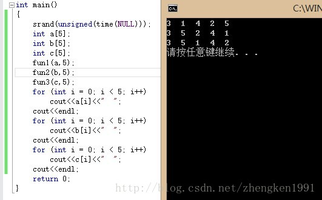

假设需要生成前N个自然数的一个随机置换。例如，{4，3，1，5，2}和{3，1，4，2，5}就是合法的置换，但{5，4，1，2，1}却不是，因为数1出现两次而数3却没有。这个程序常常用于模拟一些算法。我们假设存在一个随机数生成器RandInt(i,j)，它以相同的概率生成i和j之间的一个整数。
int RandInt(int i, int j) //srand()放在主函数中了
{
if(i==0)
return rand()%(j+1);
else
return rand()%(j-i+1) + i;
}填入从a[0]到a[n-1]的数组a,为了填入a[i]，生成随机数直到它不同于已经生成的a[0],a[1],...,a[i-1]时，再将其填入a[i].
void fun1(int a[], int n)
{
int tmp;
for (int i = 0; i < n; i++)
{
tmp=RandInt(1, n);
for (int j = 0; j < i; j++)
{
if(tmp==a[j])
{
tmp=RandInt(1, n);
j=-1;
}
}
a[i] = tmp;
}
}
同算法一，但要保存一个附加的数组，称之为Used(用过的)数组。当一个随机数ran最初被放入数组A的时候，置Used[ran]=1。
void fun2(int a[], int n)
{
int tmp;
for (int i = 0; i < n; i++)
{
tmp=RandInt(1, n);
while(used[tmp]!=0)
tmp=RandInt(1, n);
a[i]=tmp;
used[tmp]=1;
}
}填写该数组使得a[i]=i+1.然后：
for(i=1; i<N; i++)
swap(&a[i], a[RandInt(0,i)]);void swap(int &a, int &b)
{
int tmp=a;
a=b;
b=tmp;
}
void fun3(int a[], int n)
{
for (int i = 0; i < n; i++)
{
a[i]=i+1;
}
for (int i = 1; i < n; i++)
{
swap(a[i], a[ RandInt(0, i) ]);
}
}
